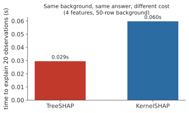
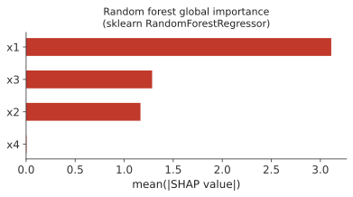

2 Using SHAP in R and Python
The previous chapter introduced SHAP visually: a baseline, a coalition, a background, a waterfall plot, and an interaction. This chapter shows how those same ideas appear in real R and Python code, and how to read the objects and plots that the software returns.
Download the files used throughout this chapter:
- shap_sim.csv, the main simulated dataset, with a
splitcolumn shared by both languages - correlated_pair.csv, the small correlated pair used for the masking section
Place them in a data folder beside your script or notebook so that the paths in the examples work unchanged.
2.1 Which packages
R does not have one package that covers every situation, so this chapter uses three.
kernelshapcomputes SHAP values for any model, given an explicit background dataset and a function that produces predictions from that model. It is model-agnostic: it does not need to know anything about how the model was built.shapvizstores SHAP values in one object and produces waterfall, bar, beeswarm, and dependence plots from it.treeshapis used later in the chapter for tree-based models that do not have their own SHAP implementation, such asranger.
XGBoost has its own SHAP implementation, so for XGBoost models we can obtain SHAP values directly from the fitted model, without any of the three packages above.
Python uses one package, shap, throughout. It provides several explainer types for different kinds of models, and picks a suitable one automatically through shap.Explainer when you do not specify one yourself.
Other packages, such as fastshap, provide Monte Carlo approximations to Shapley values. They are not used in this chapter.
2.2 A tiny example we can check by hand
Before applying SHAP to a fitted model, it helps to see it applied to something simpler: a function small enough that the correct answer can be worked out directly. The next chapter derives the same numbers by hand from the definition of a Shapley value. Here, we only compute them in code.
Define
\[f(A, B, C) = 10 + 2A + 2B + 2C + AB,\]
use the single point \(A=B=C=0\) as the background, and explain the point \(A=2, B=1, C=0.5\).
library(kernelshap)
f <- function(X) {
10 + 2*X[,"A"] + 2*X[,"B"] + 2*X[,"C"] + X[,"A"]*X[,"B"]
}
pred_fun_toy <- function(model, X) f(X)
bg_toy <- data.frame(A = 0, B = 0, C = 0)
x_toy <- data.frame(A = 2, B = 1, C = 0.5)
ks_toy <- kernelshap(object = "toy", X = x_toy, bg_X = bg_toy,
pred_fun = pred_fun_toy, verbose = FALSE)
print(ks_toy$S)
cat("baseline:", ks_toy$baseline, "\n")
cat("prediction:", ks_toy$predictions, "\n") A B C
[1,] 5 3 1
baseline: 10
prediction: 19import numpy as np
import shap
def f(X):
X = np.atleast_2d(X)
A, B, C = X[:, 0], X[:, 1], X[:, 2]
return 10 + 2*A + 2*B + 2*C + 1*A*B
background = np.array([[0.0, 0.0, 0.0]])
x = np.array([[2.0, 1.0, 0.5]])
explainer = shap.KernelExplainer(f, background)
shap_values = explainer.shap_values(x, nsamples="auto", silent=True)
print("SHAP values:", shap_values)
print("base value:", explainer.expected_value)
print("model prediction:", f(x))SHAP values: [[5. 3. 1.]]
base value: 10.0
model prediction: [19.]Both implementations return the same SHAP values: \(A = 5\), \(B = 3\), \(C = 1\). Together with the baseline of 10, they reconstruct the prediction:
\[10 + 5 + 3 + 1 = 19.\]
kernelshap() reports this as an exact computation: with only three features it enumerates every coalition rather than sampling from them. shap.KernelExplainer reaches the same answer with nsamples="auto", which for three features also amounts to exact enumeration.
2.3 Simulated data with a known structure
The rest of this chapter uses a simulated dataset. Because the data are simulated, we know which features enter the equation used to generate the outcome, and how. This lets us compare what the fitted model has learned with the structure that was used to generate the data. It does not mean SHAP recovers that structure directly. SHAP only ever explains the fitted model. Here, we can additionally check whether the model learned something consistent with the mechanism we built.

The outcome was generated as
\[y = 5 + 4x_1 + 1.5x_2 + 2x_1x_2 + 3\sin(1.3x_3) + \varepsilon,\]
with \(x_1, x_2, x_4\) drawn from a standard normal distribution, \(x_3\) drawn uniformly between \(-3\) and \(3\), and \(\varepsilon\) independent Gaussian noise added to every observation. Feature by feature:
- x1 has a strong linear effect on \(y\).
- x2 has a smaller linear effect, and also appears in the interaction term \(2x_1x_2\).
- x3 has a nonlinear effect, \(3\sin(1.3x_3)\).
- x4 does not appear in the equation at all. It plays no part in generating \(y\).
Figure 2.1 plots \(y\) against each feature on its own. x1’s effect is visible directly, because it is the dominant term. x3’s effect is harder to see in the raw scatter, because \(y\) also depends strongly on x1 and x2, and the plot does not hold those fixed. The true \(x_3\) component, \(3\sin(1.3x_3)\), is drawn on top of the points so that the shape is visible despite this.
A companion binary outcome, used later in the chapter, is generated from the same signal through a logistic function, so the same four features matter for classification in the same way they matter for regression.
The dataset is simulated once, with a fixed seed, and saved to data/shap_sim.csv. A split column is generated once and stored in the file, so that R and Python train and test on exactly the same rows without depending on their random number generators producing the same sequence.
sim <- read.csv("data/shap_sim.csv")
feature_cols <- c("x1", "x2", "x3", "x4")
train <- sim[sim$split == "train", ]
test <- sim[sim$split == "test", ]
cat(dim(sim), "\n")
cat(nrow(train), nrow(test), "\n")
head(sim, 3)4000 8
3001 999
x1 x2 x3 x4 y y_class prob_true split
1 1.5778694 -0.1671370 0.4567377 -0.006211355 13.742766 1 0.8042561 train
2 1.1786727 -0.9833237 0.1771062 1.231445144 3.193947 0 0.5774059 train
3 0.3105099 -0.6072354 -1.0696451 0.247771042 2.720831 0 0.3561608 testimport pandas as pd
sim = pd.read_csv("data/shap_sim.csv")
feature_cols = ["x1", "x2", "x3", "x4"]
train = sim[sim.split == "train"].reset_index(drop=True)
test = sim[sim.split == "test"].reset_index(drop=True)
print(sim.shape)
print(train.shape, test.shape)
print(sim.head(3))(4000, 8)
(3001, 8) (999, 8)
x1 x2 x3 x4 y y_class prob_true split
0 1.577869 -0.167137 0.456738 -0.006211 13.742766 1 0.804256 train
1 1.178673 -0.983324 0.177106 1.231445 3.193947 0 0.577406 train
2 0.310510 -0.607235 -1.069645 0.247771 2.720831 0 0.356161 test2.4 Fitting the model
We fit an XGBoost regression model. It can represent linear effects, the nonlinear effect on x3, and the interaction between x1 and x2, and both R and Python give it direct access to SHAP values.
library(xgboost)
dtrain <- xgb.DMatrix(data = as.matrix(train[, feature_cols]), label = train$y)
fit_reg <- xgb.train(
params = list(max_depth = 3, eta = 0.05, objective = "reg:squarederror"),
data = dtrain, nrounds = 300
)
pred <- predict(fit_reg, as.matrix(test[, feature_cols]))
r2 <- 1 - sum((test$y - pred)^2) / sum((test$y - mean(test$y))^2)
cat("R2 on the test set:", round(r2, 4), "\n")R2 on the test set: 0.8793import xgboost as xgb
from sklearn.metrics import r2_score
reg = xgb.XGBRegressor(n_estimators=300, max_depth=3, learning_rate=0.05, random_state=0)
reg.fit(train[feature_cols], train["y"])
pred = reg.predict(test[feature_cols])
print("R2 on the test set:", round(r2_score(test["y"], pred), 4))R2 on the test set: 0.8793Before interpreting a model with SHAP, we first check that it predicts reasonably well. An explanation of a poorly fitting model mostly describes noise. R² is 0.88 in both languages here. Both models use the same tree depth, learning rate, and number of rounds, with no random subsampling, so both build the same sequence of trees from the same data.
2.5 Computing SHAP values
library(shapviz)
shp <- shapviz(fit_reg, X_pred = as.matrix(test[, feature_cols]), X = test[, feature_cols])
cat("dim(S):", dim(shp$S), "\n")
cat("baseline:", round(shp$baseline, 4), "\n")
cat("\nSHAP values for observation 1:\n")
print(round(shp$S[1, ], 4))dim(S): 999 4
baseline: 4.996
SHAP values for observation 1:
x1 x2 x3 x4
1.2132 -1.2344 -2.9200 0.0446explainer_reg = shap.TreeExplainer(reg)
explanation = explainer_reg(test[feature_cols])
print("shape of .values:", explanation.values.shape)
print("base value:", round(float(explanation.base_values[0]), 4))
row = 0
print("\nSHAP values for observation 0:")
for name, val in zip(feature_cols, explanation.values[row]):
print(f" {name}: {val:+.4f}")shape of .values: (999, 4)
base value: 4.996
SHAP values for observation 0:
x1: +1.2132
x2: -1.2344
x3: -2.9200
x4: +0.0446shp$S in R and explanation.values in Python are both a matrix with 999 rows, one for each test observation, and 4 columns, one for each feature. Each cell is the contribution of one feature to one observation’s prediction. shp$S[1, "x1"] (equivalently, explanation.values[0, 0] in Python) is the contribution of x1 to the prediction for the first test observation, \(+1.2132\).
The baseline, 4.996, was computed without supplying an explicit background dataset to either function. In that situation both shapviz() (through XGBoost’s own SHAP support) and shap.TreeExplainer() fall back to a calculation that uses the training data captured inside the fitted trees, rather than an explicit background sample of rows. This is not the same background mechanism as the marginal, explicit-background masking from the previous chapter. Later in this chapter, once an explicit background is supplied, the two mechanisms are compared directly.
2.6 Checking additivity
The SHAP values for one observation should reconstruct that observation’s prediction, apart from small numerical differences introduced by the computation:
\[\text{prediction} \approx \text{baseline} + \sum_j \text{SHAP}_j.\]
The code below takes the baseline, adds each row’s SHAP values, and compares the result with the model’s own prediction.
reconstructed <- shp$baseline + rowSums(shp$S)
cat("max abs difference, reconstructed vs predict():", max(abs(reconstructed - pred)), "\n")max abs difference, reconstructed vs predict(): 2.204627e-05reconstructed = explanation.base_values + explanation.values.sum(axis=1)
direct_pred = reg.predict(test[feature_cols])
print("max abs difference, reconstructed vs model.predict:",
round(float(np.max(np.abs(reconstructed - direct_pred))), 8))max abs difference, reconstructed vs model.predict: 2.098e-05The largest difference, across all 999 test observations, is about \(2 \times 10^{-5}\) in both languages. That is negligible here, and comes from floating-point arithmetic during the tree computation rather than from any gap in the method.
2.7 Reading a waterfall plot
sv_waterfall(shp, row_id = 7)shap.plots.waterfall(explanation[6])![Waterfall chart with four rows, feature values labeled on the left (x3=2.582, x1=-0.106, x2=0.668, x4=0.536) and a SHAP value inside each bar (-1.05, -0.89, +0.83, +0.01). The baseline E[f(X)]=4.996 is marked at the bottom axis. Reading from the bottom row upward, each bar shifts the running total left or right, ending at f(x)=3.9 at the top.](images/07-waterfall-example.png)
This is the same kind of plot introduced in the previous chapter, now for a specific test observation. Two different numbers appear on it. On the left, in gray, are the observed feature values for this observation: x3 is 2.582, x1 is \(-0.106\), x2 is 0.668, x4 is 0.536. Inside each bar is a different number, that feature’s SHAP value: \(-1.05\) for x3, \(-0.89\) for x1, \(+0.83\) for x2, \(+0.01\) for x4.
Read the plot from the bottom row upward. The baseline, \(E[f(X)] = 4.996\), is marked on the axis. x4’s SHAP value, \(+0.01\), moves the running total to \(5.006\). x2’s SHAP value, \(+0.83\), moves it to \(5.836\). x1’s SHAP value, \(-0.89\), moves it to \(4.946\). x3’s SHAP value, \(-1.05\), moves it to \(3.9\), the model’s actual prediction for this observation. A red bar is a positive SHAP value and moves the running total to the right. A blue bar is a negative SHAP value and moves it to the left. Color here says nothing about whether the feature’s own value was high or low, only which direction it pushed the prediction.
For this observation, x1 and x3 make the largest negative contributions, x2 makes a positive contribution, and x4 contributes very little.
2.8 Global importance and beeswarm plots
These are the same two plots introduced in the previous chapter, computed here from the fitted XGBoost model.
mean_abs <- colMeans(abs(shp$S))
print(round(sort(mean_abs, decreasing = TRUE), 3))
sv_importance(shp, kind = "bar")
sv_importance(shp, kind = "beeswarm") x1 x3 x2 x4
3.132 1.646 1.278 0.066mean_abs = np.abs(explanation.values).mean(axis=0)
for name, val in sorted(zip(feature_cols, mean_abs), key=lambda t: -t[1]):
print(f" {name}: {val:.3f}")
shap.plots.bar(explanation)
shap.plots.beeswarm(explanation) x1: 3.132
x3: 1.646
x2: 1.278
x4: 0.066

The bar chart is computed by taking, for each feature, the absolute SHAP value for every test observation and averaging them, mean(abs(SHAP)). Absolute values are used because a feature that pushes some predictions up and others down by similar amounts would otherwise average close to zero, even if it strongly affects individual predictions.
x1 has the largest mean absolute SHAP value, so the fitted model relies on x1 more than on any other feature across these test observations. x4 is close to zero, so the fitted model makes very little use of x4. This agrees with the data-generating equation, where x4 does not appear at all.
In the beeswarm plot, the horizontal position of a point is its SHAP value, its color is the observed value of that feature, and each point is one test observation.
2.9 Dependence and interaction
A dependence plot puts one feature’s observed value on the horizontal axis and its SHAP value on the vertical axis.
sv_dependence(shp, v = "x2", color_var = "x1")shap.plots.scatter(explanation[:, "x2"], color=explanation[:, "x1"])
The horizontal axis is the observed value of x2. The vertical axis is the SHAP value assigned to x2. Color is the observed value of x1, from blue (low x1) to red (high x1).
Look at the points near x2 = 1. Some of them have a small SHAP value for x2. Others, at a similar x2 value, have a much larger SHAP value. x2 is nearly the same in both cases, so x2’s own value cannot be the reason its contribution differs. Color gives the reason: the points with a larger x1 (red) tend to have a larger SHAP value for x2 than the points with a smaller x1 (blue), even when x2 is about the same. The fitted model is using x2 differently depending on x1.
This is the interaction between x1 and x2 that the previous chapter introduced: the contribution of x2 is not determined by x2 alone. It also depends on x1. The simulated outcome contains the term \(2x_1x_2\), so this pattern is consistent with the structure used to generate the data.
2.10 Classification and the output scale
SHAP values for a classifier can be reported on more than one scale. This section fits a classifier and shows the same explanation on two of them.
dtrain_c <- xgb.DMatrix(data = as.matrix(train[, feature_cols]), label = train$y_class)
fit_clf <- xgb.train(
params = list(max_depth = 3, eta = 0.05, objective = "binary:logistic", eval_metric = "logloss"),
data = dtrain_c, nrounds = 300
)
proba <- predict(fit_clf, as.matrix(test[, feature_cols]))
auc <- function(y, p) {
r <- rank(p)
n1 <- sum(y == 1); n0 <- sum(y == 0)
(sum(r[y == 1]) - n1 * (n1 + 1) / 2) / (n1 * n0)
}
cat("test AUC:", round(auc(test$y_class, proba), 4), "\n")test AUC: 0.7062from sklearn.metrics import roc_auc_score
clf = xgb.XGBClassifier(n_estimators=300, max_depth=3, learning_rate=0.05,
random_state=0, eval_metric="logloss")
clf.fit(train[feature_cols], train["y_class"])
proba_test = clf.predict_proba(test[feature_cols])[:, 1]
print("test AUC:", round(roc_auc_score(test["y_class"], proba_test), 4))test AUC: 0.7062Test AUC is 0.706 in both languages. The rest of this section is not about classifier evaluation. It explains which scale a classifier’s SHAP values are reported on, starting with predicted probability, the easier of the two scales to interpret, and then showing the raw margin scale that some software returns natively. Every SHAP value in this section explains the same target, the classifier’s score for y_class = 1: a positive value pushes the prediction toward y_class = 1, a negative value pushes it away.
2.10.1 Predicted probability, computed from an explicit background
A probability baseline is built the same way as any other baseline in this course: take every observation in a background sample, obtain the model’s predicted probability for each one, and average those probabilities. That average is the reference probability the SHAP values are computed against. With a background of \(m\) rows,
\[\phi_0^{(\text{prob})} = \frac{1}{m}\sum_{r=1}^m p(X_r),\]
the same masking-and-averaging mechanism from the previous chapter, applied here to a predicted probability instead of a numeric outcome. R and Python use the same 100 background rows, the first 100 training rows, so both languages answer the same question.
pred_fun_prob <- function(model, X) predict(model, xgboost::xgb.DMatrix(data.matrix(X)))
background <- train[1:100, feature_cols]
ps <- permshap(fit_clf, X = test[1:3, feature_cols], bg_X = background,
pred_fun = pred_fun_prob, verbose = FALSE)
cat("probability baseline:", round(ps$baseline, 4), "\n")
print(round(ps$S, 4))
recon_proba <- ps$baseline + rowSums(ps$S)
cat("baseline + sum(shap), probability:", round(recon_proba, 4), "\n")
cat("predict() probabilities:", round(proba[1:3], 4), "\n")probability baseline: 0.5128
x1 x2 x3 x4
[1,] 0.0010 -0.0234 -0.1767 -0.0241
[2,] -0.0582 -0.0797 0.1063 0.0111
[3,] -0.3183 0.0063 -0.0211 -0.0141
baseline + sum(shap), probability: 0.2896 0.4923 0.1657
predict() probabilities: 0.2896 0.4923 0.1657background = train[feature_cols].iloc[:100]
explainer_proba = shap.TreeExplainer(clf, data=background, model_output="probability")
expl_proba = explainer_proba(test[feature_cols].iloc[:3])
print("probability baseline:", round(float(expl_proba.base_values[0]), 4))
print(np.round(expl_proba.values, 4))
recon_proba = expl_proba.base_values + expl_proba.values.sum(axis=1)
print("baseline + sum(shap), probability:", np.round(recon_proba, 4))
print("predict_proba:", np.round(clf.predict_proba(test[feature_cols].iloc[:3])[:, 1], 4))probability baseline: 0.5128
[[ 0.0032 -0.0229 -0.1793 -0.0242]
[-0.0595 -0.0817 0.1093 0.0114]
[-0.3192 0.0087 -0.0179 -0.0188]]
baseline + sum(shap), probability: [0.2896 0.4923 0.1657]
predict_proba: [0.2896 0.4923 0.1657]R’s permshap and Python’s TreeExplainer agree on the probability baseline, 0.5128, and on the reconstructed probability for all three patients, 0.2896, 0.4923, and 0.1657, matching each language’s own predict/predict_proba exactly. The individual feature contributions are close but not identical, for example x1 contributes \(+0.0010\) to the first patient in R and \(+0.0032\) in Python. This is not a background mismatch: both use the identical 100 background rows and the same fitted model. shap.TreeExplainer’s model_output="probability" computes an efficient approximation to the probability-scale Shapley value from the tree structure directly. Checked against a direct calculation that masks every coalition explicitly and averages predicted probability over the background, permshap’s values match that direct calculation exactly, while TreeExplainer’s are close but not identical, even with a single background row. Both are legitimate SHAP values for the same probability value function. Which algorithm computed a SHAP value is a separate question from which value function it targets, and this is a case where the two disagree slightly while the value function agrees exactly.
2.10.2 Native XGBoost SHAP uses the raw margin
R’s native predcontrib route, and Python’s TreeExplainer with no background supplied, both report contributions on a different scale: the raw margin, or log-odds score, that a binary:logistic classifier works with internally before applying the logistic function.
contrib <- predict(fit_clf, as.matrix(test[1:3, feature_cols]), predcontrib = TRUE)
cat("predcontrib output (raw-margin/log-odds scale):\n")
print(round(contrib, 4))
margin_sum <- rowSums(contrib)
cat("logistic(margin sum):", round(1 / (1 + exp(-margin_sum)), 4), "\n")
cat("predict() probabilities:", round(proba[1:3], 4), "\n")predcontrib output (raw-margin/log-odds scale):
x1 x2 x3 x4 (Intercept)
3 0.0728 -0.1357 -0.7295 -0.0848 -0.0201
4 -0.2585 -0.3663 0.5366 0.0774 -0.0201
6 -1.5688 0.0325 0.0131 -0.0731 -0.0201
logistic(margin sum): 0.2896 0.4923 0.1657
predict() probabilities: 0.2896 0.4923 0.1657explainer_margin = shap.TreeExplainer(clf)
expl_margin = explainer_margin(test[feature_cols].iloc[:3])
print("raw-margin baseline:", round(float(expl_margin.base_values[0]), 4))
recon_margin = expl_margin.base_values + expl_margin.values.sum(axis=1)
print("baseline + sum(shap), raw margin:", np.round(recon_margin, 4))
print("logistic of that:", np.round(1 / (1 + np.exp(-recon_margin)), 4))
print("predict_proba:", np.round(clf.predict_proba(test[feature_cols].iloc[:3])[:, 1], 4))raw-margin baseline: -0.0201
baseline + sum(shap), raw margin: [-0.8974 -0.0309 -1.6164]
logistic of that: [0.2896 0.4923 0.1657]
predict_proba: [0.2896 0.4923 0.1657]Adding the raw-margin SHAP values to the raw-margin baseline reconstructs a log-odds value. Applying the logistic function to that complete reconstruction, not to any single piece of it, gives 0.2896, 0.4923, and 0.1657, matching predict_proba exactly. The logistic function is only applied once the whole sum, baseline plus every feature’s contribution, has already been added up.
It is tempting to shortcut this by converting the raw-margin baseline alone. That shortcut is wrong. The raw-margin baseline above, \(-0.0201\), comes from a tree-path-dependent calculation with no explicit background, so it is not directly comparable to the probability baseline computed above. Even recomputed on the identical 100-row background used for the probability baseline, the raw margin there averages to \(0.0864\), and \(\text{logistic}(0.0864) = 0.5216\), not the \(0.5128\) probability baseline computed directly on that same background. The logistic function is nonlinear, so the average of a nonlinear function is not the nonlinear function of the average:
\[\mathbb{E}[\text{logistic}(\eta(X))] \;\neq\; \text{logistic}\big(\mathbb{E}[\eta(X)]\big).\]
A probability baseline and a raw-margin baseline are two separately computed numbers, not two views of the same number. The same is true feature by feature: a raw-margin SHAP value is not converted to a probability-scale SHAP value by applying the logistic function to it on its own. Only a complete reconstruction, an entire baseline plus an entire set of contributions on one consistent scale, converts cleanly to the other scale.
This is why a student can get two very different-looking sets of SHAP numbers from two valid explainers on the same model and the same observations. Both are correct. They decompose different representations of the same prediction, and neither is a mistaken version of the other.
2.11 Background choice
In the previous chapter, changing the background changed the baseline and the SHAP values, while leaving the model’s prediction unchanged. This section reproduces that with the fitted regression model, comparing a general background against one restricted to observations with a low value of x1.
To keep the comparison between the two backgrounds rather than between two random samples, R and Python use the same background rows here: the first 200 training observations for the general background, and the first 200 training observations with \(x_1 < -1\) for the restricted background. Because both languages read the same CSV file in the same row order, selecting rows by position gives identical background data in both languages.
pred_fun_xgb <- function(model, X) predict(model, xgboost::xgb.DMatrix(data.matrix(X)))
bg_general <- train[1:200, feature_cols]
low_x1 <- train[train$x1 < -1, feature_cols]
bg_restricted <- low_x1[1:200, ]
ps_general <- permshap(fit_reg, X = test[1:3, feature_cols], bg_X = bg_general,
pred_fun = pred_fun_xgb, verbose = FALSE)
ps_restricted <- permshap(fit_reg, X = test[1:3, feature_cols], bg_X = bg_restricted,
pred_fun = pred_fun_xgb, verbose = FALSE)
cat("baseline, general background:", round(ps_general$baseline, 3), "\n")
cat("baseline, low-x1 background:", round(ps_restricted$baseline, 3), "\n")
cat("prediction (unchanged):", round(pred[1], 3), "\n")
cat("SHAP values, general background:", round(ps_general$S[1, ], 3), "\n")
cat("SHAP values, low-x1 background:", round(ps_restricted$S[1, ], 3), "\n")baseline, general background: 4.985
baseline, low-x1 background: -0.79
prediction (unchanged): 2.099
SHAP values, general background: 1.433 -1.206 -3.148 0.035
SHAP values, low-x1 background: 6.082 -0.339 -2.885 0.032predict_fn = lambda X: reg.predict(pd.DataFrame(X, columns=feature_cols))
bg_general = train[feature_cols].iloc[:200].to_numpy()
low_x1 = train[train.x1 < -1].reset_index(drop=True)
bg_restricted = low_x1[feature_cols].iloc[:200].to_numpy()
row0 = test[feature_cols].iloc[:1].to_numpy()
ke_general = shap.KernelExplainer(predict_fn, bg_general)
sv_general = ke_general.shap_values(row0, nsamples="auto", silent=True)
ke_restricted = shap.KernelExplainer(predict_fn, bg_restricted)
sv_restricted = ke_restricted.shap_values(row0, nsamples="auto", silent=True)
print("baseline, general background:", round(float(ke_general.expected_value), 3))
print("baseline, low-x1 background:", round(float(ke_restricted.expected_value), 3))
print("prediction (unchanged):", round(float(pred[0]), 3))
print("SHAP values, general background:", np.round(sv_general[0], 3))
print("SHAP values, low-x1 background:", np.round(sv_restricted[0], 3))baseline, general background: 4.985
baseline, low-x1 background: -0.79
prediction (unchanged): 2.099
SHAP values, general background: [ 1.433 -1.206 -3.148 0.035]
SHAP values, low-x1 background: [ 6.082 -0.339 -2.885 0.032]R’s permshap() and Python’s shap.KernelExplainer are both model-agnostic Shapley estimators, and with the same background rows and the same fitted model they return the same numbers here. The prediction for this observation, 2.099, is unchanged between the two backgrounds, because it depends only on the fitted model and this observation’s own feature values, neither of which changed. The baseline changes because the reference population changed: restricting the background to observations with a low x1 removes the higher-x1 rows that pulled the general baseline up, so the low-x1 baseline sits well below it. The SHAP values change as well, because they are no longer measured from the same starting point. Explaining this observation relative to a low-x1 population means x1 itself now accounts for a much larger share of the gap between baseline and prediction (6.082 against 1.433), because in that population, having a much higher x1 than typical is a bigger departure from what is expected.
2.13 Comparing KernelSHAP and TreeSHAP
TreeSHAP and KernelSHAP are two ways of computing a Shapley value. Whether they agree depends on whether they are set up to answer the same question. If both use the same model, the same background, and the same output scale, they should target the same explanation. If one uses a tree-path-dependent calculation with no explicit background and the other uses an explicit marginal background, they are computing two different value functions, and should not be expected to agree.
R’s native predcontrib has no argument for supplying an explicit background. It always uses a tree-path-dependent calculation based on the training data captured inside the trees. Comparing it to permshap() with an explicit background compares two different value functions on purpose.
bg_small <- train[1:50, feature_cols]
explain_rows <- test[1:20, feature_cols]
native_contrib <- predict(fit_reg, as.matrix(explain_rows), predcontrib = TRUE)[, feature_cols]
ps <- permshap(fit_reg, X = explain_rows, bg_X = bg_small, pred_fun = pred_fun_xgb, verbose = FALSE)
cat("mean abs native predcontrib:", round(mean(abs(native_contrib)), 4), "\n")
cat("mean abs permshap:", round(mean(abs(ps$S)), 4), "\n")
cat("mean abs difference:", round(mean(abs(native_contrib - ps$S)), 4), "\n")mean abs native predcontrib: 1.6235
mean abs permshap: 1.6437
mean abs difference: 0.1216Here, TreeExplainer is given the same explicit background and the same marginal (interventional) definition that KernelExplainer uses, so both are computing the same value function by two different algorithms.
import time
bg_small = train[feature_cols].iloc[:50]
explain_rows = test[feature_cols].iloc[:20]
t0 = time.time()
tree_expl = shap.TreeExplainer(reg, data=bg_small, feature_perturbation="interventional")
tree_vals = tree_expl(explain_rows).values
t_tree = time.time() - t0
predict_fn = lambda X: reg.predict(pd.DataFrame(X, columns=feature_cols))
t0 = time.time()
kernel_expl = shap.KernelExplainer(predict_fn, bg_small)
kernel_vals = kernel_expl.shap_values(explain_rows, nsamples=200, silent=True)
t_kernel = time.time() - t0
print("TreeSHAP time (s):", round(t_tree, 4))
print("KernelSHAP time (s):", round(t_kernel, 4))
print("max abs difference:", round(float(np.max(np.abs(tree_vals - kernel_vals))), 4))TreeSHAP time (s): 0.0279
KernelSHAP time (s): 0.0557
max abs difference: 0.0
In the Python panel, both explainers are set up to compute the same marginal value function from the same 50-row background, and in this example their values agree to numerical precision. TreeSHAP is faster here (Figure 2.6), because it uses the tree structure directly instead of repeatedly evaluating the model on masked inputs, but this specific ratio is a property of this example, with 4 features and 20 explained rows, not a general guarantee.
In the R panel, native predcontrib and permshap are not computing the same value function, so the two sets of values differ (mean absolute values of 1.62 and 1.64, a mean absolute difference of 0.12). One integrates out missing features using the tree structure and the training data’s cover statistics. The other integrates them out using an explicit 50-row background sample. Neither is a more correct Shapley value than the other. They answer related but different attribution questions, and the difference here reflects that, not an error in either computation.
2.14 A random forest example
XGBoost has its own SHAP implementation. Many other tree-based models do not, including R’s ranger and Python’s RandomForestRegressor. This is a brief example of using treeshap for ranger, and shap.TreeExplainer for a scikit-learn forest, on the same simulated data.
library(ranger)
library(treeshap)
set.seed(0)
rf <- ranger(y ~ x1 + x2 + x3 + x4, data = train, num.trees = 300, max.depth = 6)
pred_rf <- predict(rf, test)$predictions
r2_rf <- 1 - sum((test$y - pred_rf)^2) / sum((test$y - mean(test$y))^2)
cat("ranger R2 on the test set:", round(r2_rf, 4), "\n")
unified <- treeshap::ranger.unify(rf, train[, feature_cols])
ts <- treeshap::treeshap(unified, test[, feature_cols], verbose = FALSE)
mean_abs_rf <- colMeans(abs(ts$shaps))
print(round(sort(mean_abs_rf, decreasing = TRUE), 3))ranger R2 on the test set: 0.831
x1 x3 x2 x4
2.981 1.223 1.091 0.014from sklearn.ensemble import RandomForestRegressor
rf = RandomForestRegressor(n_estimators=300, max_depth=6, random_state=0)
rf.fit(train[feature_cols], train["y"])
pred_rf = rf.predict(test[feature_cols])
r2_rf = 1 - np.sum((test["y"] - pred_rf) ** 2) / np.sum((test["y"] - test["y"].mean()) ** 2)
print("RF R2 on the test set:", round(r2_rf, 4))
expl_rf = shap.TreeExplainer(rf)
explanation_rf = expl_rf(test[feature_cols])
mean_abs_rf = np.abs(explanation_rf.values).mean(axis=0)
for name, val in sorted(zip(feature_cols, mean_abs_rf), key=lambda t: -t[1]):
print(f" {name}: {val:.3f}")RF R2 on the test set: 0.8469
x1: 3.111
x3: 1.285
x2: 1.166
x4: 0.004
ranger and scikit-learn’s RandomForestRegressor are different implementations of a random forest, fit independently here, so their R² values differ (0.831 against 0.847). We do not expect their observation-level SHAP values to match. What both agree on is which features the fitted model relies on: x1 most, x3 and x2 less and at a similar level to each other, and x4 close to zero, matching what the XGBoost model above also showed.
2.15 Summary
This chapter fit models in R and Python, computed SHAP values for them, checked additivity, read local and global plots, compared output scales, backgrounds, and masking strategies, and compared two SHAP algorithms on the same and on different value functions. The next chapter derives the Shapley value formula, the SHAP kernel, and the weighted regression behind KernelSHAP from first principles.